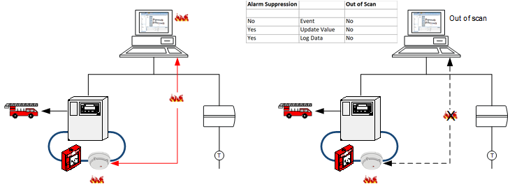
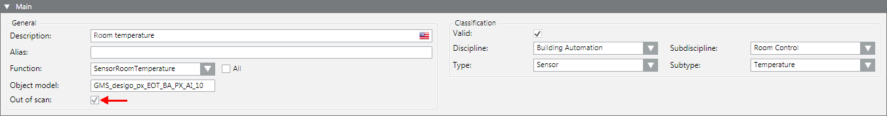
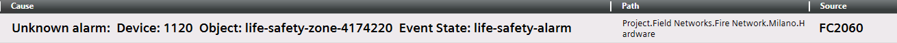

Temporarily Taking a Sensor Out of Scan
From Object Configurator, you can place system objects 'out-of-scan', for example to temporarily interrupt communication between Desigo CC and a particular subsystem. This can be useful during commissioning, when a building segment has been engineered but cannot be put into operation yet.

NOTICE

Interrupt Communication
Out-of-scan stops the communication between the device and the management platform but does not impact the alarm functionality. For example, an incoming alarm on a fire detection system is still forwarded to the fire department. If you want to prevent alarm forwarding to the fire department, you must take the fire detector out of commission in the Operation tab: Click Exclude to turn off an area, zone, or fire detector on the panel.
Take an Object out of Scan
- In System Browser, select the object you want to place out of scan. For example,
Project > Field Networks > [network] > Hardware > [device] > [data point]. - Select the Object Configurator tab.
- In the Main expander, select the Out of scan check box.
- Click Save
 .
.
- The communications between the device and the management platform is disconnected.
- The out-of-scan object is no longer counted in the number of data points regulated by licensing. The licensing update can take up to 10 minutes.

NOTE: For certain subsystems an out-of-scan data point results in either no alarm at all being displayed or in an unknown alarm. In the latter case, you must identify the source of the alarm on the local fire panel.

Search for Objects that are Out of Scan
- In System Browser, click Filter search
 .
. - Open the Other drop-down list.
- Select the Out of Scan check box and then the option Enabled.
- Click the gray background or entry fields to close the dialog box.
- Click Search.
- The found objects are displayed in System Browser.